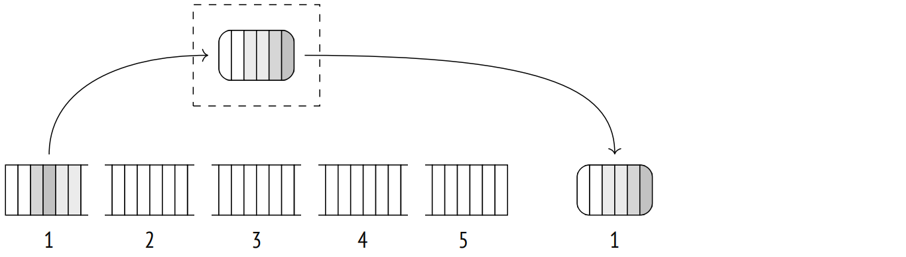
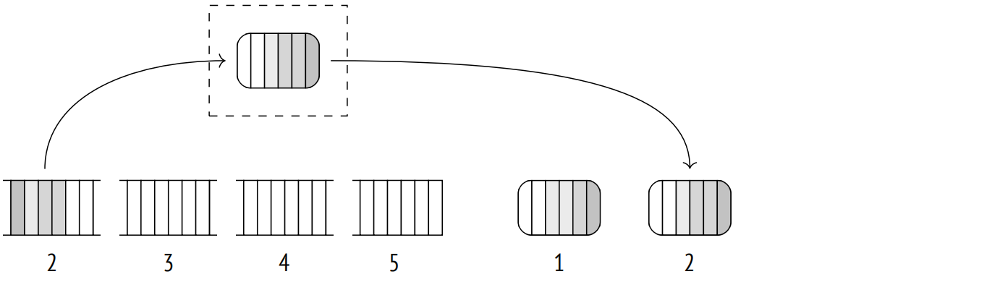
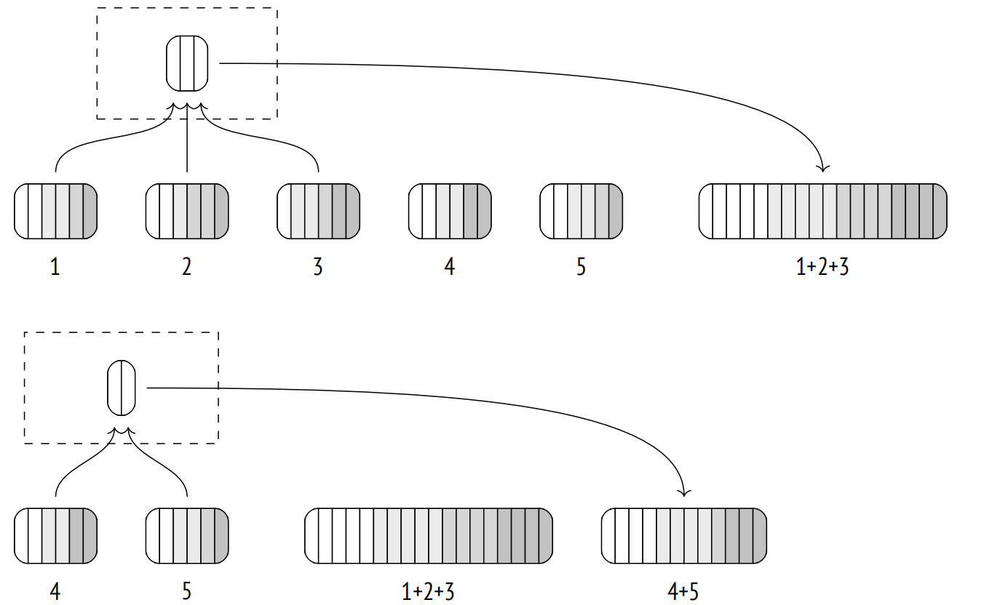
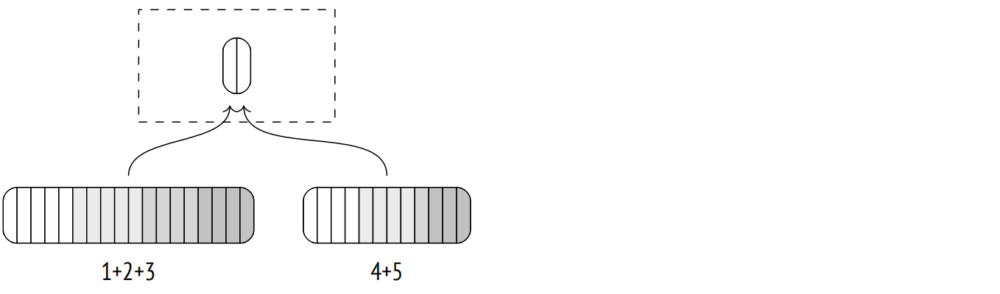
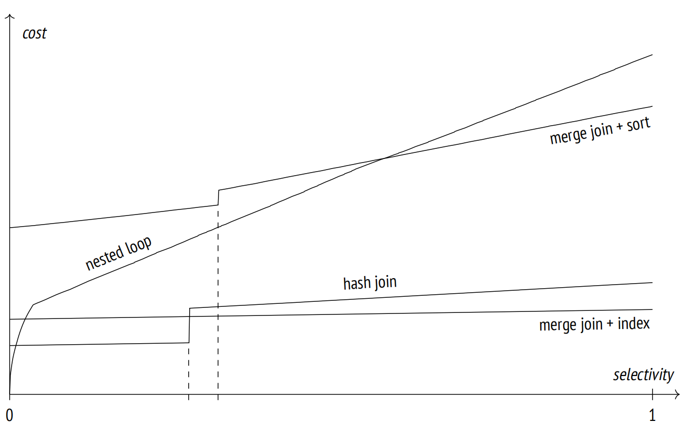

第 23 章：排序与归并
23.1 归并连接
归并连接处理按连接键进行排序的数据集，并返回以类似方式进行排序的结果。输入数据集可能在索引扫描后预排序；否则，执行器必须在真正开始归并之前对它们进行排序。1
23.1.1 归并排序数据集
让我们看一个归并连接的例子；在执行计划中由 Merge Join 节点表示：2
=> EXPLAIN (costs off) SELECT *
FROM tickets t
JOIN ticket_flights tf ON tf.ticket_no = t.ticket_no
ORDER BY t.ticket_no;
QUERY PLAN
−−−−−−−−−−−−−−−−−−−−−−−−−−−−−−−−−−−−−−−−−−−−−−−−−−−−−−−−−−−−−−−−
Merge Join
Merge Cond: (t.ticket_no = tf.ticket_no)
−> Index Scan using tickets_pkey on tickets t
−> Index Scan using ticket_flights_pkey on ticket_flights tf
(4 rows)优化器更喜欢这种连接方式，因为它按照 ORDER BY 子句定义的方式返回排序后的结果。在选择计划时，优化器会注意到数据集的排序顺序，并且除非确实需要，否则不会执行任何排序。例如，如果归并连接生成的数据集已经具有合适的排序顺序，那么它可以直接在之后的归并连接中使用：
=> EXPLAIN (costs off) SELECT *
FROM tickets t
JOIN ticket_flights tf ON t.ticket_no = tf.ticket_no
JOIN boarding_passes bp ON bp.ticket_no = tf.ticket_no
AND bp.flight_id = tf.flight_id
ORDER BY t.ticket_no;
QUERY PLAN
−−−−−−−−−−−−−−−−−−−−−−−−−−−−−−−−−−−−−−−−−−−−−−−−−−−−−−−−−−−−−−−−−−−−−
Merge Join
Merge Cond: (tf.ticket_no = t.ticket_no)
−> Merge Join
Merge Cond: ((tf.ticket_no = bp.ticket_no) AND (tf.flight_...
−> Index Scan using ticket_flights_pkey on ticket_flights tf
−> Index Scan using boarding_passes_pkey on boarding_passe...
−> Index Scan using tickets_pkey on tickets t
(7 rows)首先要连接的表是 ticket_flights 和 boarding_passes；它们都有一个复合主键 (ticket_no, flight_id)，结果按这两列排序。然后产生的结果集与按 ticket_no 列排序的 tickets 表进行连接。
连接时只需对两个数据集进行一次遍历，并且不占用任何额外内存。它使用两个指针指向内层数据集和外层数据集的当前行 (最初是第一行)。
如果当前行的键值不匹配，其中一个指针 (引用键值较小的行) 将前进到下一行，直到找到匹配项。连接行将返回给上层节点，然后内层结果集的指针前进一位。操作持续进行，直到其中一个数据集结束。
此算法可以处理内层数据集的重复项，但外层数据集也可以包含它们。因此，算法需要改进：如果外指针前进后键仍然相同，则内指针回到第一个匹配行。因此，外层数据集的每一行将与内层数据集中具有相同键值的所有行匹配。3
对于外连接，算法稍作调整，但仍然基于相同的原则。
归并连接条件只能使用等值操作符，这意味着只支持等值连接 (尽管对其他条件类型的支持也在进行中)。4
成本估算。让我们仔细看看之前的例子：
=> EXPLAIN SELECT *
FROM tickets t
JOIN ticket_flights tf ON tf.ticket_no = t.ticket_no
ORDER BY t.ticket_no;
QUERY PLAN
−−−−−−−−−−−−−−−−−−−−−−−−−−−−−−−−−−−−−−−−−−−−−−−−−−−−−−−−−−−−−−−−
Merge Join (cost=0.99..822355.54 rows=8391852 width=136)
Merge Cond: (t.ticket_no = tf.ticket_no)
−> Index Scan using tickets_pkey on tickets t
(cost=0.43..139110.29 rows=2949857 width=104)
−> Index Scan using ticket_flights_pkey on ticket_flights tf
(cost=0.56..570972.46 rows=8391852 width=32)
(6 rows)连接的启动成本至少包括所有子节点的启动成本。
通常，可能需要在找到第一个匹配项之前扫描外层或内层数据集的一部分。可以通过比较 (基于直方图) 两个数据集中最小的连接键来估算这个比例。5 但在这个特定的案例中，两个表中的 ticket_no 是相同的。
总成本包括从子节点获取数据的成本和计算成本。
由于连接算法在其中一个数据集结束后立即停止 (当然，除非执行外连接)，因此另一个数据集可能只被部分扫描。为了评估扫描部分的大小，我们可以比较两组数据集中的最大键值。在此示例中，两个数据集都将被完整读取，因此连接的总成本包括两个子节点的总成本之和。
此外，如果存在任何重复项，内层数据集的一些行可能会被多次扫描。重复扫描的预估次数等于连接结果的基数与内层数据集的基数之间的差值。6 在这个查询中，这些基数是相同的，这意味着数据集中不包含重复项。
算法比较两个数据集的连接键。单次比较的成本以 cpu_operator_cost 进行估算，而预估的比较次数可以取为两个数据集的行数之和 (加上由于重复项导致的重复读取次数)。结果中包含的每一行的处理成本，如往常一样，以 cpu_tuple_cost 进行估算。
因此，在这个例子中，连接的成本如下估计：7
=> SELECT 0.43 + 0.56 AS startup,
round((
139110.29 + 570972.46 +
current_setting('cpu_tuple_cost')::real * 8391852 +
current_setting('cpu_operator_cost')::real * (2949857 + 8391852)
)::numeric, 2) AS total;
startup | total
−−−−−−−−−+−−−−−−−−−−−
0.99 | 822355.54
(1 row)23.1.2 并行模式
虽然归并连接没有并行模式，但它仍然可以在并行计划中使用。8
外层数据集可以由多个工作进程并行扫描，但内层数据集总是被每个工作进程完整扫描。
由于并行哈希连接几乎总是成本更低，我将暂时关闭它：
=> SET enable_hashjoin = off;以下是使用归并连接的并行计划示例：
=> EXPLAIN (costs off)
SELECT count(*), sum(tf.amount)
FROM tickets t
JOIN ticket_flights tf ON tf.ticket_no = t.ticket_no;
QUERY PLAN
−−−−−−−−−−−−−−−−−−−−−−−−−−−−−−−−−−−−−−−−−−−−−−−−−−−−−−−−−−−−−−−−−−−−−
Finalize Aggregate
−> Gather
Workers Planned: 2
−> Partial Aggregate
−> Merge Join
Merge Cond: (tf.ticket_no = t.ticket_no)
−> Parallel Index Scan using ticket_flights_pkey o...
−> Index Only Scan using tickets_pkey on tickets t
(8 rows)在并行计划中不允许使用全外归并连接和右外归并连接。
23.1.3 更改
归并连接算法可用于任何类型的连接。唯一的限制是全外连接和右外连接的连接条件必须包含归并兼容的表达式 ("outer-column equals inner-column" 或 “column equals constant")。9 内连接和左外连接仅通过不相关的条件过滤连接结果，但对于全外连接和右外连接，这种过滤是不适用的。
以下是使用归并算法的全外连接示例：
=> EXPLAIN (costs off) SELECT *
FROM tickets t
FULL JOIN ticket_flights tf ON tf.ticket_no = t.ticket_no
ORDER BY t.ticket_no;
QUERY PLAN
−−−−−−−−−−−−−−−−−−−−−−−−−−−−−−−−−−−−−−−−−−−−−−−−−−−−−−−−−−−−−−−−−−−−
Sort
Sort Key: t.ticket_no
−> Merge Full Join
Merge Cond: (t.ticket_no = tf.ticket_no)
−> Index Scan using tickets_pkey on tickets t
−> Index Scan using ticket_flights_pkey on ticket_flights tf
(6 rows)内连接和左外归并连接保留排序顺序。但是，全外连接和右外连接不能保证这一点，因为空值可以楔入外层数据集的有序值之间，这会破坏排序顺序。10 为了恢复所需的顺序，规划器在此处引入了 Sort 节点。当然，这增加了计划的成本，使哈希连接更具吸引力，所以规划器只是因为当前禁用了哈希连接才选择了这个计划。
但是下一个例子不能没有哈希连接：嵌套循环根本不允许全外连接，而归并连接因为不支持的连接条件而不能使用。因此，不管 enable_hashjoin 参数值如何，都会使用哈希连接：
=> EXPLAIN (costs off) SELECT *
FROM tickets t
FULL JOIN ticket_flights tf ON tf.ticket_no = t.ticket_no
AND tf.amount > 0
ORDER BY t.ticket_no;
QUERY PLAN
−−−−−−−−−−−−−−−−−−−−−−−−−−−−−−−−−−−−−−−−−−−−−−−
Sort
Sort Key: t.ticket_no
−> Hash Full Join
Hash Cond: (tf.ticket_no = t.ticket_no)
Join Filter: (tf.amount > '0'::numeric)
−> Seq Scan on ticket_flights tf
−> Hash
−> Seq Scan on tickets t
(8 rows)让我们恢复之前禁止使用哈希连接的能力：
=> RESET enable_hashjoin;23.2 排序
如果其中一个数据集 (或可能两个数据集) 没有按连接键排序，那么在连接操作开始之前必须重新排序。这个排序操作在计划中由 Sort 节点表示：11
=> EXPLAIN (costs off)
SELECT * FROM flights f
JOIN airports_data dep ON f.departure_airport = dep.airport_code
ORDER BY dep.airport_code;
QUERY PLAN
−−−−−−−−−−−−−−−−−−−−−−−−−−−−−−−−−−−−−−−−−−−−−−−−−−−−−−−−
Merge Join
Merge Cond: (f.departure_airport = dep.airport_code)
−> Sort
Sort Key: f.departure_airport
−> Seq Scan on flights f
−> Sort
Sort Key: dep.airport_code
−> Seq Scan on airports_data dep
(8 rows)如果在常规查询和窗口函数中指定了 ORDER BY 子句，这种排序也可以在连接上下文之外应用：
=> EXPLAIN (costs off)
SELECT flight_id,
row_number() OVER (PARTITION BY flight_no ORDER BY flight_id)
FROM flights f;
QUERY PLAN
−−−−−−−−−−−−−−−−−−−−−−−−−−−−−−−−−−−−−−
WindowAgg
−> Sort
Sort Key: flight_no, flight_id
−> Seq Scan on flights f
(4 rows)此处，WindowAgg 节点 12 在数据集上计算窗口函数，该数据集已由 Sort 节点预排序。
规划器在其工具箱中有几种排序方法。我已经展示的示例使用了其中的两种 (Sort Method)。像往常一样，可以通过 EXPLAIN ANALYZE 命令显示这些详细信息：
=> EXPLAIN (analyze,costs off,timing off,summary off)
SELECT * FROM flights f
JOIN airports_data dep ON f.departure_airport = dep.airport_code
ORDER BY dep.airport_code;
QUERY PLAN
−−−−−−−−−−−−−−−−−−−−−−−−−−−−−−−−−−−−−−−−−−−−−−−−−−−−−−−−−−−−−−−−−−
Merge Join (actual rows=214867 loops=1)
Merge Cond: (f.departure_airport = dep.airport_code)
−> Sort (actual rows=214867 loops=1)
Sort Key: f.departure_airport
Sort Method: external merge Disk: 17136kB
−> Seq Scan on flights f (actual rows=214867 loops=1)
−> Sort (actual rows=104 loops=1)
Sort Key: dep.airport_code
Sort Method: quicksort Memory: 52kB
−> Seq Scan on airports_data dep (actual rows=104 loops=1)
(10 rows)23.2.1 快排
如果待排序的数据集适合 work_mem 块，则使用经典的快排方法。该算法在所有的教科书上都有介绍，此处不再过多描述。
至于实现，排序是由一个专用组件 13 执行的，它根据可用的内存数量和一些其他因素选择最合适的算法。
成本估算。让我们看看小表是如何排序的。在这种情况下，使用快排算法在内存中进行排序：
=> EXPLAIN SELECT *
FROM airports_data
ORDER BY airport_code;
QUERY PLAN
−−−−−−−−−−−−−−−−−−−−−−−−−−−−−−−−−−−−−−−−−−−−−−−−−−−−−−−−−−−−−−−−−−−−−
Sort (cost=7.52..7.78 rows=104 width=145)
Sort Key: airport_code
−> Seq Scan on airports_data (cost=0.00..4.04 rows=104 width=...
(3 rows)已知对 n 个值进行排序的计算复杂度为 $$ O(n \log_{2} n) $$ 单次比较操作估算为 cpu_operator_cost 值的两倍。由于在检索结果之前必须对整个数据集进行扫描和排序，因此排序的启动成本包括子节点的总成本和比较操作所产生的所有成本。
排序的总成本还包括返回每行的处理成本，按 cpu_operator_cost 进行估算 (而不是常规的 cpu_tuple_cost 值，因为 Sort 节点产生的开销微不足道)。14
对于这个例子，成本如下计算：
=> WITH costs(startup) AS (
SELECT 4.04 + round((
current_setting('cpu_operator_cost')::real * 2 *
104 * log(2, 104)
)::numeric, 2)
)
SELECT startup,
startup + round((
current_setting('cpu_operator_cost')::real * 104
)::numeric, 2) AS total
FROM costs;
startup | total
−−−−−−−−−+−−−−−−−
7.52 | 7.78
(1 row)23.2.2 Top-N 堆排序
如果数据集只需要部分排序 (由 LIMIT 子句定义)，则可以使用堆排序方法 (在计划中显式为 top-N heapsort)。更准确地说，如果排序至少将行数减少一半，或者如果分配的内存不能容纳整个输入数据集 (而输出数据集适合)，则使用此算法。
=> EXPLAIN (analyze, timing off, summary off)
SELECT * FROM seats
ORDER BY seat_no LIMIT 100;
QUERY PLAN
−−−−−−−−−−−−−−−−−−−−−−−−−−−−−−−−−−−−−−−−−−−−−−−−−−−−−−−−−−−−−−−−−−−
Limit (cost=72.57..72.82 rows=100 width=15)
(actual rows=100 loops=1)
−> Sort (cost=72.57..75.91 rows=1339 width=15)
(actual rows=100 loops=1)
Sort Key: seat_no
Sort Method: top−N heapsort Memory: 33kB
−> Seq Scan on seats (cost=0.00..21.39 rows=1339 width=15)
(actual rows=1339 loops=1)
(8 rows)为了从 n 个值中找到 k 个最大 (或最小) 值，执行器将前 k 行添加到称为堆的数据结构中。然后将剩余的行逐一添加，并在每次迭代后从堆中删除最小 (或最大) 值。处理完所有行后，堆就包含了 k 个被寻找的值。
这里的堆术语表示一种众所周知的数据结构，与经常被同名引用的数据库表没有任何关系。
成本估算。此算法的计算复杂度预估为 $$ O(n \log_{2} k) $$ 但与快排算法相比，每个特定操作的成本更高。因此，公式使用 15 $$ n \log_{2} 2k $$
=> WITH costs(startup)
AS (
SELECT 21.39 + round((
current_setting('cpu_operator_cost')::real * 2 *
1339 * log(2, 2 * 100)
)::numeric, 2)
)
SELECT startup,
startup + round((
current_setting('cpu_operator_cost')::real * 100
)::numeric, 2) AS total
FROM costs;
startup | total
−−−−−−−−−+−−−−−−−
72.57 | 72.82
(1 row)23.2.3 外排
如果扫描显示数据集太大而无法在内存中排序，排序节点将切换到外部归并排序 (在计划中标记为 external merge)。
已经扫描的行在内存中通过快排算法排序并写入一个临时文件中。

然后后续的行被读入释放的内存中，这个过程重复进行，直到所有数据被写入几个预排序的文件中。

接下来，这些文件被合并成一个。执行此操作的算法与归并连接大致相同；主要区别在于它可以同时处理两个以上的文件。
合并操作不需要太多内存。实际上，每个文件有一行的空间就足够了。从每个文件中读取第一行，具有最小值 (或最大值，取决于排序顺序) 的行作为部分结果返回，释放的内存用从同一文件中获取的下一行进行填充。
实际上，行是以 32 页的批次读取的，而不是逐个读取，这减少了 I/O 操作的次数。单次迭代中合并的文件数取决于可用内存，但不会少于 6 个。上限也有限制 (500)，因为当文件太多时，效率会下降。16
排序算法有着悠久的术语。外部排序最初是使用磁带执行的，而 PostgreSQL 为控制临时文件的组件保留了一个类似的名称。17 部分排序的数据集称为 “runs” 18。参与合并的 “runs” 数称为 “merge order”。我没有使用这些术语，但如果你想了解 PostgreSQL 代码和注释，了解它们是值得的。
如果排序后的临时文件不能一次性全部合并，则必须分多次处理，其部分结果被写入新的临时文件。每次迭代都会增加要读取和写入的数据量，因此可用的 RAM 越多，外部排序完成的速度就越快。

下一次迭代会合并新创建的临时文件。

最终的合并通常被推迟，并在上层节点拉取数据时即时执行。
让我们运行 EXPLAIN ANALYZE 命令来查看外部排序使用了多少磁盘空间。BUFFERS 选项显示临时文件(temp read 和 written) 的缓冲区使用情况。写入的缓冲区数量将 (大致) 与读取的数量相同；转换为千字节，这个值在计划中显示为 Disk：
=> EXPLAIN (analyze, buffers, costs off, timing off, summary off)
SELECT * FROM flights
ORDER BY scheduled_departure;
QUERY PLAN
−−−−−−−−−−−−−−−−−−−−−−−−−−−−−−−−−−−−−−−−−−−−−−−−−−−−−−−−−
Sort (actual rows=214867 loops=1)
Sort Key: scheduled_departure
Sort Method: external merge Disk: 17136kB
Buffers: shared hit=2627, temp read=2142 written=2150
−> Seq Scan on flights (actual rows=214867 loops=1)
Buffers: shared hit=2624
(6 rows)要在服务器日志中打印有关临时文件使用的更多详情，你可以启用 log_temp_files 参数。
成本估算。以使用外部排序的相同计划为例：
=> EXPLAIN SELECT *
FROM flights
ORDER BY scheduled_departure;
QUERY PLAN
−−−−−−−−−−−−−−−−−−−−−−−−−−−−−−−−−−−−−−−−−−−−−−−−−−−−−−−−−−−−−−−−−−−−−
Sort (cost=31883.96..32421.12 rows=214867 width=63)
Sort Key: scheduled_departure
−> Seq Scan on flights (cost=0.00..4772.67 rows=214867 width=63)
(3 rows)此处比较成本 (其数量与内存中的快排操作数量相同) 增加了 I/O 成本。19 所有输入数据必须首先写入磁盘上的临时文件，然后在合并操作期间从磁盘读取 (如果所有创建的文件不能在一次迭代中合并，则可能不止一次)。
假定四分之三的磁盘操作 (读和写) 是顺序的，而四分之一是随机的。
写入磁盘的数据量取决于待排序的行数和查询中使用的列数。20 在这个例子中，查询显示了 flights 表的所有列，因此如果不考虑其元组和页面元数据，溢出到磁盘的数据大小几乎与整个表的大小相同 (2309 页而不是 2624)。
此处，排序在一次迭代中完成。
因此，此计划中排序成本估算如下：
=> WITH costs(startup) AS (
SELECT 4772.67 + round((
current_setting('cpu_operator_cost')::real * 2 *
214867 * log(2, 214867) +
(current_setting('seq_page_cost')::real * 0.75 +
current_setting('random_page_cost')::real * 0.25) *
2 * 2309 * 1 -- one iteration
)::numeric, 2)
)
SELECT startup,
startup + round((
current_setting('cpu_operator_cost')::real * 214867
)::numeric, 2) AS total
FROM costs;
startup | total
−−−−−−−−−−+−−−−−−−−−−
31883.96 | 32421.13
(1 row)23.2.4 增量排序
如果一个数据集需要按照键 K1 … Km … Kn 排序，并且已知该数据集已经按照前 m 个键排序，那么就不需要从头重新排序。相反，可以根据相同的前几个键 K1 … Km 将数据集分成多个组（这些组内的值已经按定义的顺序排列)，然后再分别对这些组按照剩余的 Km+1 … Kn 键进行排序。这种方法称为增量排序。
增量排序相较其他排序算法占用的内存更少，因为它将数据集分成了几个较小的组；此外，它允许执行器在处理完第一个分组后便开始返回结果，而无需等待整个数据集排序完成。
在 PostgreSQL 中，实现更加微妙：21 相对较大的组分别处理，较小的组则被合并在一起并完全排序。这减少了调用排序过程所产生的开销。22
执行计划中，增量排序通过 Incremental Sort 节点表示：
=> EXPLAIN (analyze, costs off, timing off, summary off)
SELECT * FROM bookings
ORDER BY total_amount, book_date;
QUERY PLAN
−−−−−−−−−−−−−−−−−−−−−−−−−−−−−−−−−−−−−−−−−−−−−−−−−−−−−−−−−−−−−−−−−−−−
Incremental Sort (actual rows=2111110 loops=1)
Sort Key: total_amount, book_date
Presorted Key: total_amount
Full−sort Groups: 2823 Sort Method: quicksort Average
Memory: 30kB Peak Memory: 30kB
Pre−sorted Groups: 2624 Sort Method: quicksort Average
Memory: 3152kB Peak Memory: 3259kB
−> Index Scan using bookings_total_amount_idx on bookings (ac...
(8 rows)如计划所示，数据集按 total_amount 字段预排序，因为这是在该列 (Presorted Key) 上执行索引扫描的结果。EXPLIAN ANALYZE 命令还显示了运行时统计数据。Full-sort Groups 行与被合并起来进行完全排序的小的分组相关，而 Presorted Groups 行显示了具有部分有序数据的大的分组的数据，这些数据只需要按 book_date 列进行增量排序。在这两种情况下，都使用了内存中的快排方法。组大小的差异是由于预定成本的不均匀分布造成的。
增量排序也可用于计算窗口函数：
=> EXPLAIN (costs off)
SELECT row_number() OVER (ORDER BY total_amount, book_date)
FROM bookings;
QUERY PLAN
−−−−−−−−−−−−−−−−−−−−−−−−−−−−−−−−−−−−−−−−−−−−−−−−−−−−−−−−−−−−−−−−−
WindowAgg
−> Incremental Sort
Sort Key: total_amount, book_date
Presorted Key: total_amount
−> Index Scan using bookings_total_amount_idx on bookings
(5 rows)成本估算。增量排序的成本计算 23 基于预期的组数量 24 和对平均大小的组进行排序的预估成本 (我们已经回顾过了)。
启动成本反映了对第一个分组进行排序的成本估算，这使得节点可以开始返回排序后的行；总成本包括所有组的排序成本。
我们不打算在此处进一步探讨这些计算方式。
23.2.5 并行模式
排序也可以并行进行。但是，尽管并行工作进程预先对它们的数据份额进行排序，但 Gather 节点对它们的排序顺序一无所知，只能按照先到先得的原则累积。为了保留排序顺序，执行器必须使用 Gather Merge 节点：25
=> EXPLAIN (analyze, costs off, timing off, summary off)
SELECT *
FROM flights
ORDER BY scheduled_departure
LIMIT 10;
QUERY PLAN
−−−−−−−−−−−−−−−−−−−−−−−−−−−−−−−−−−−−−−−−−−−−−−−−−−−−−−−−−−−−−−−−−−−−−
Limit (actual rows=10 loops=1)
−> Gather Merge (actual rows=10 loops=1)
Workers Planned: 1
Workers Launched: 1
−> Sort (actual rows=7 loops=2)
Sort Key: scheduled_departure
Sort Method: top−N heapsort Memory: 27kB
Worker 0: Sort Method: top−N heapsort Memory: 27kB
−> Parallel Seq Scan on flights (actual rows=107434 lo...
(9 rows)Gather Merge 节点使用二叉堆 26 来调整由多个工作进程获取的行的顺序。它实际上合并了几个已排序的数据集，就像外部排序一样，但它用于不同的用例：Gather Merge 通常处理少量固定数量的数据源，并逐个而不是逐块地获取行。
成本估算。Gather Merge 节点的启动成本基于其子节点的启动成本。就像 Gather 节点一样，此值增加了启动并行进程的成本 (按 parallel_setup_cost 估算) 。
然后，接收到的值进一步增加了构建二叉堆的成本，这需要对 n 个值进行排序，其中 n 是并行工作进程的数量，即 $$ n \log_{2} n $$ 单个比较操作的成本预估为 cpu_operator_cost 的两倍，这类操作的总份额通常可以忽略不计，因为 n 相当小。
总成本包括通过若干个执行计划并行部分的进程获取所有数据的成本，以及将这些数据传输给领导者进程的成本。单行传输的代价预估为 parallel_tuple_cost 加 5%，以补偿可能在获取下一个值时的等待。
在总成本计算中还必须考虑二叉堆更新所引起的成本：每个输入行需要 $$ \log_{2} n $$ 个比较操作和某些额外操作 (它们按 cpu_operator_cost 估算)。27
让我们看看另一个使用 Gather Merge 节点的计划。注意，这里的工作进程首先通过哈希执行部分聚合，然后 Sort 节点对接收到的结果进行排序 (成本很低，因为聚合后只剩下很少的行) ，进一步传递给领导者进程，领导者进程在 Gather Merge 节点中汇总完整的结果。至于最终的聚合，是在排序后的值列表上执行的：
=> EXPLAIN SELECT amount, count(*)
FROM ticket_flights
GROUP BY amount;
QUERY PLAN
−−−−−−−−−−−−−−−−−−−−−−−−−−−−−−−−−−−−−−−−−−−−−−−−−−−−−−−−−−−−−−−−−−−−−
Finalize GroupAggregate (cost=123399.62..123485.00 rows=337 wid...
Group Key: amount
−> Gather Merge (cost=123399.62..123478.26 rows=674 width=14)
Workers Planned: 2
−> Sort (cost=122399.59..122400.44 rows=337 width=14)
Sort Key: amount
−> Partial HashAggregate (cost=122382.07..122385.44 r...
Group Key: amount
−> Parallel Seq Scan on ticket_flights (cost=0.00...
(9 rows)在这里，我们有三个并行进程 (包括领导者进程)，Gather Merge 节点的成本估算如下：
=> WITH costs(startup, run) AS (
SELECT round((
-- launching processes
current_setting('parallel_setup_cost')::real +
-- building the heap
current_setting('cpu_operator_cost')::real * 2 * 3 * log(2, 3)
)::numeric, 2),
round((
-- passing rows
current_setting('parallel_tuple_cost')::real * 1.05 * 674 +
-- updating the heap
current_setting('cpu_operator_cost')::real * 2 * 674 * log(2, 3) +
current_setting('cpu_operator_cost')::real * 674
)::numeric, 2)
)
SELECT 122399.59 + startup AS startup,
122400.44 + startup + run AS total
FROM costs;
startup | total
−−−−−−−−−−−+−−−−−−−−−−−
123399.61 | 123478.26
(1 row)23.3 非重复值和分组
正如我们刚刚看到的，对值进行分组以执行聚合 (并消除重复项) 不仅可以通过哈希来执行，还可以通过排序来完成。在已排序的列表中，可以在一次遍历中挑选出重复值的组。
从已排序的列表中检索不同的值在计划中由一个名为 Unique 的节点表示：28
=> EXPLAIN (costs off) SELECT DISTINCT book_ref
FROM bookings
ORDER BY book_ref;
QUERY PLAN
−−−−−−−−−−−−−−−−−−−−−−−−−−−−−−−−−−−−−−−−−−−−−−−−−−−−−−−−−−
Result
−> Unique
−> Index Only Scan using bookings_pkey on bookings
(3 rows)聚合在 GroupAggregate 节点中执行：29
=> EXPLAIN (costs off) SELECT book_ref, count(*)
FROM bookings
GROUP BY book_ref
ORDER BY book_ref;
QUERY PLAN
−−−−−−−−−−−−−−−−−−−−−−−−−−−−−−−−−−−−−−−−−−−−−−−−−−−−−−
GroupAggregate
Group Key: book_ref
−> Index Only Scan using bookings_pkey on bookings
(3 rows)在并行计划中，这个节点称为 Partial GroupAggregate，而完成聚合的节点称为 Finalize GroupAggregate。
如果分组是通过多个列集执行的 (在 GROUPING SETS、CUBE 或 ROLLUP 子句中指定)，那么哈希和排序策略可以在单个节点中结合使用。在不深入探讨此算法极其复杂的细节情况下，我将简单地提供一个示例，此示例在内存不足的情况下按三个不同的列执行分组：
=> SET work_mem = '64kB';
=> EXPLAIN (costs off) SELECT count(*)
FROM flights
GROUP BY GROUPING SETS (aircraft_code, flight_no, departure_airport);
QUERY PLAN
−−−−−−−−−−−−−−−−−−−−−−−−−−−−−−−
MixedAggregate
Hash Key: departure_airport
Group Key: aircraft_code
Sort Key: flight_no
Group Key: flight_no
−> Sort
Sort Key: aircraft_code
−> Seq Scan on flights
(8 rows)
=> RESET work_mem;以下是执行此查询时发生的情况。聚合节点 (在计划中显示为 MixedAggregate) 接收按 aircraft_code 列排序的数据集。
首先，扫描这个数据集，并按 aircraft_code 列 (Group Key) 对值进行分组。随着扫描的进行，行按 flight_no 列重新排序 (就像由常规 Sort 节点所做的那样：如果内存足够，通过快排方法，或者使用磁盘上的外部排序)；同时，执行器将这些行放入使用 departure_airport 作为键的哈希表中 (就像通过哈希聚合所做的那样：要么在内存中，要么使用临时文件)。
在第二阶段，执行器扫描刚刚按 flight_no 列排序的数据集，并按相同的列分组 (Sort Key 和嵌套的 Group Key 节点)。如果行必须按另一列分组，它们将根据需要再次重新排序。
最后，扫描第一阶段准备的哈希表，并按 departure_airport 列分组 (Hash Key)。
23.4 连接方式的比较
正如我们所见，两个数据集可以通过三种不同的方式进行连接，每种方式都有其自己的优缺点。
嵌套循环连接没有任何前置条件，并且可以立即开始返回结果集的第一行。它是唯一一个不必完全扫描内层数据集的连接方式 (只要它可以通过索引访问)。这些属性使嵌套循环算法 (结合索引) 成为处理相对较小数据集的短 OLTP 查询的理想选择。
随着数据量的增长，嵌套循环的弱点变得明显。对于笛卡尔积，该算法具有平方复杂度——成本与被连接的数据集大小的乘积成正比。然而，笛卡尔积在实践中并不常见；对于外层数据集的每一行，执行器通常使用索引访问内层数据集的一定数量的行，这个平均数并不依赖于数据集的总大小 (例如，预订中的平均票数不会随着预订和购买的票数的增加而改变)。因此，嵌套循环算法的复杂度通常呈线性增长而不是平方增长，即使具有很高的线性系数。
嵌套循环算法的一个重要区别是其普适性：它支持所有连接条件，而其他方式只能处理等值连接。这允许执行带有任何类型条件的查询 (除了不能与嵌套循环一起使用的全外连接)，但你必须记住，大数据集的非等值连接很可能执行得比预期的慢。
哈希连接在大数据集上表现最佳。如果 RAM 足够，它只需要对两个数据集进行一次遍历，因此其复杂度是线性的。结合顺序表扫描，这种算法通常用于 OLAP 查询，这些查询基于大量数据计算结果。
然而，如果响应时间比吞吐量更重要，哈希连接不是最佳选择：在整个哈希表构建完成之前，它不会返回结果。
哈希连接算法仅适用于等值连接。另一个限制是连接键的数据类型必须支持哈希 (但几乎所有数据类型都支持)。
嵌套循环连接有时可以利用 Memoize 节点 (也基于哈希表) 中的内层数据集的缓存，从而击败哈希连接。虽然哈希连接总是完全扫描内层数据集，嵌套循环算法不必这样做，这可能会降低一些成本。
归并连接可以完美处理短的 OLTP 查询和长的 OLAP 查询。它具有线性复杂度 (要连接的集合只需扫描一次)，不需要太多内存，并且无需任何预处理即可返回结果；但是，数据集必须已经有所需的排序顺序。
最具成本效益的方式是通过索引扫描获取数据。如果行数较少，这是一个自然的选择；对于较大的数据集，索引扫描仍然是有效的，但前提是堆访问很少或根本不发生时。
如果没有合适的索引可用，那么必须对数据集进行排序，但此操作是内存密集型的，其复杂度高于线性： $$ O(n \log_{2} n) $$ 在这种情况下，哈希连接几乎总是比归并连接的代价更低——除非必须对结果进行排序。
归并连接的一个额外好处是内层和外层数据集的等价性。嵌套循环和哈希连接的效率都高度依赖于规划器是否可以正确分配内层和外层数据集。
归并连接仅限于等值联接。此外，数据类型必须具有 B 树操作符类。
下图表示了各种连接方式的成本与要连接的行的比例之间的大致依赖关系。

如果选择性高，嵌套循环连接对两个表都使用索引访问；然后，规划器切换到外表的完全扫描，这在图表的线性部分有所反映。
这里的哈希连接对两个表都使用了完全扫描。图中的"台阶"对应于哈希表填满整个内存并且批次开始溢出到磁盘的时刻。
如果使用索引扫描，归并连接的成本会呈小幅线性增长。如果 work_mem 大小足够大，哈希连接通常更有效，但当涉及到临时文件时，归并连接会胜过它。
sort-merge join 的上图显示，当索引不可用并且必须对数据进行排序时，成本上升。就像哈希连接的情况一样，图上的"台阶"是内存不足造成的，因为它会导致使用临时文件进行排序。
这只是一个例子；在每个特定情况下，成本之间的比例将不同。
-
backend/optimizer/path/joinpath.c, generate_mergejoin_paths function ↩︎
-
backend/executor/nodeMergejoin.c ↩︎
-
backend/executor/nodeMergejoin.c, ExecMergeJoin function ↩︎
-
For example, see commitfest.postgresql.org/33/3160 ↩︎
-
backend/utils/adt/selfuncs.c, mergejoinscansel function ↩︎
-
backend/optimizer/path/costsize.c, final_cost_mergejoin function ↩︎
-
backend/optimizer/path/costsize.c, initial_cost_mergejoin & final_cost_mergejoin functions ↩︎
-
backend/optimizer/path/joinpath.c, consider_parallel_mergejoin function ↩︎
-
backend/optimizer/path/joinpath.c, select_mergejoin_clauses function ↩︎
-
backend/optimizer/path/pathkeys.c, build_join_pathkeys function ↩︎
-
backend/executor/nodeSort.c ↩︎
-
backend/executor/nodeWindowAgg.c ↩︎
-
backend/utils/sort/tuplesort.c ↩︎
-
backend/optimizer/path/costsize.c, cost_sort function ↩︎
-
backend/optimizer/path/costsize.c, cost_sort function ↩︎
-
backend/utils/sort/tuplesort.c, tuplesort_merge_order function ↩︎
-
backend/utils/sort/logtape.c ↩︎
-
Donald E. Knuth. The Art of Computer Programming. Volume III. Sorting and Searching ↩︎
-
backend/optimizer/path/costsize.c, cost_sort function ↩︎
-
backend/optimizer/path/costsize.c, relation_byte_size function ↩︎
-
backend/executor/nodeIncrementalSort.c ↩︎
-
backend/utils/sort/tuplesort.c ↩︎
-
backend/optimizer/path/costsize.c, cost_incremental_sort function ↩︎
-
backend/utils/adt/selfuncs.c, estimate_num_groups function ↩︎
-
backend/executor/nodeGatherMerge.c ↩︎
-
backend/lib/binaryheap.c ↩︎
-
backend/optimizer/path/costsize.c, cost_gather_merge function ↩︎
-
backend/executor/nodeUnique.c ↩︎
-
backend/executor/nodeAgg.c, agg_retrieve_direct function ↩︎